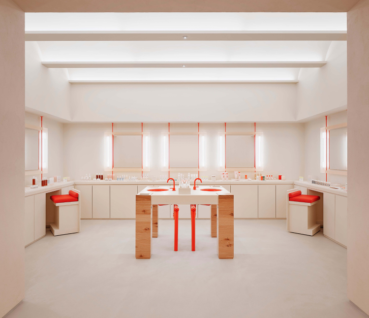
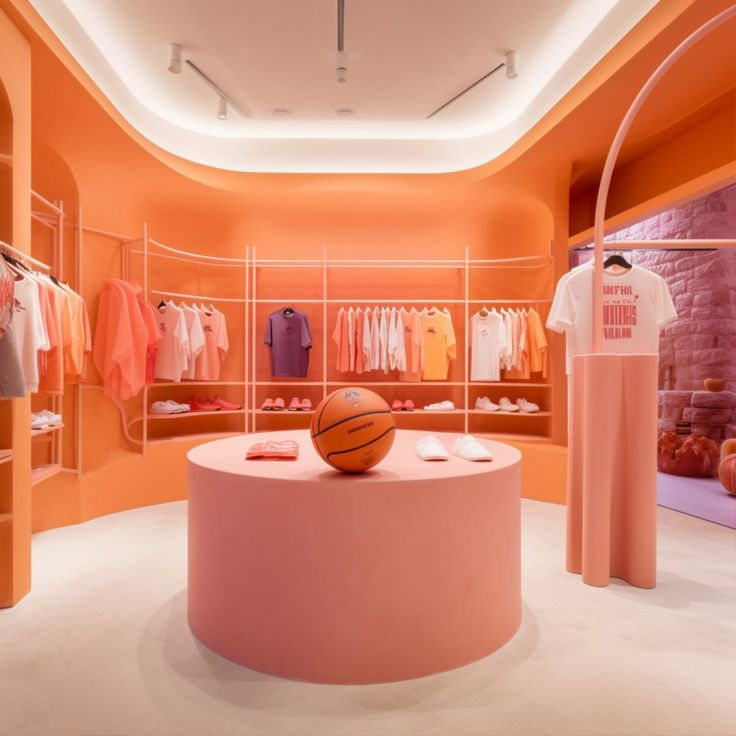

Menu
NYC NRF
NYC NRF
MENU
Agenda
Research & Insights
New York Stores to Visit
Map
The IBM Team
Research & Insights
5 trends for 2025
Ignite innovation with people-powered AI.
Read more

6 hard truths CEOs must face
How to leap forward with courage and conviction in the generative AI era.
Read more
2024 Consumer Study: Revolutionise retail with AI everywhere
It’s time to simplify the shopping experience. Customers won’t wait.
Read more

The intuitive supply chain
The IBM Institute for Business Value uses data-driven research and expert analysis to deliver thought-provoking insights to leaders on the emerging
Read more
Lux Retail POV
The IBM Institute for Business Value uses data-driven research and expert analysis to deliver thought-provoking insights to leaders on the emerging
Read more
IBM Research
The IBM Institute for Business Value uses data-driven research and expert analysis to deliver thought-provoking insights to leaders on the emerging
Read more
Watsonx
The IBM Institute for Business Value uses data-driven research and expert analysis to deliver thought-provoking insights to leaders on the emerging
Read more
Case Studies
Max Mara Fashion Group
Read more
Blockchain - but make it fashion
Read more
The future of fashion is fashionably transparent and sustainable
Read more
How AI technology can help boost fashion forecasting
Read more
Digital shopping with a personal touch
Read more
COVID-19 was TAG Heuer’s time to shine online
Read more
Redefining the consumer experience: Diageo partners with SAP and IBM on global digital transformation
Read more